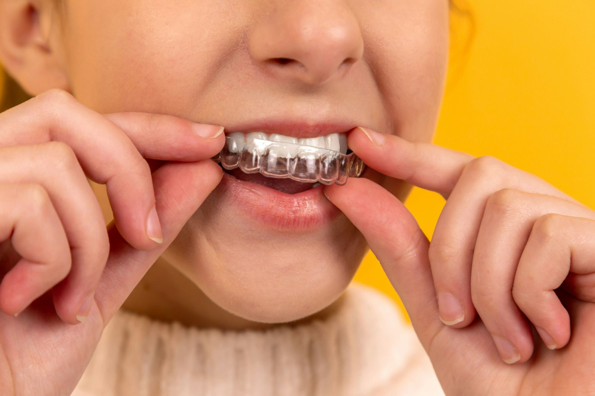

Our experienced dentists use advanced materials to provide natural-looking, long-lasting dental fillings that blend seamlessly with your smile.
Our dental filling treatments are designed to remove decay, prevent further damage, and restore the integrity of your tooth. By choosing the right filling material and utilizing our expertise, we ensure that your restored tooth looks natural, functions properly, and lasts for years to come. Our goal is to provide you with a comfortable experience while delivering exceptional results that improve your oral health and enhance your smile. To that end, we offer a variety of dental filling options, including:
Composite fillings are a popular choice for those seeking a natural-looking restoration. Made of a tooth-colored resin material, these fillings blend seamlessly with your existing teeth, making them virtually undetectable. Composite fillings are durable, versatile, and can be used to repair decay on both front and back teeth.
Amalgam fillings, also known as silver fillings, are renowned for their durability and long-lasting nature. Made of a mixture of metals, including silver, tin, and copper, amalgam fillings are strong and resistant to wear. They are often used to restore larger cavities, particularly in the back teeth where chewing forces are greatest.
For patients seeking a more distinctive option, gold fillings offer a combination of strength, durability, and aesthetics. Made of a gold alloy, these fillings are known for their exceptional longevity and resistance to corrosion.
At JMP Dental & Implant Centre, we understand that many patients may feel anxious about receiving dental fillings. That's why we prioritize your comfort and well-being throughout the entire treatment process. Our skilled dentists use the latest techniques and advanced technology to provide you with the most gentle and efficient dental filling experience possible.

We begin by thoroughly numbing the treatment area to ensure your comfort throughout the procedure.
We carefully remove any decay and clean the tooth to prepare it for the filling.
Using your chosen filling material, we skillfully shape and sculpt the filling to restore your tooth's natural shape and function.
Finally, we polish the filling to ensure a smooth and seamless finish. Throughout the process, we work with precision and care to minimize any discomfort and create a lasting, beautiful result.
Following your dental filling procedure, it is normal to experience some minor sensitivity or discomfort in the treated tooth. This typically subsides within a few days as your tooth adjusts to the new filling. In the meantime, you can manage any sensitivity by:
Our experienced dentists will evaluate your oral health and discuss your specific needs and goals to determine if dental fillings are the best treatment option for you. We will also help you choose the most suitable filling material based on the location and extent of the decay, as well as your personal preferences and budget.
Contact JMP Dental & Implant Centre to book a consultation and restore a cavity or damaged tooth with a suitable filling.